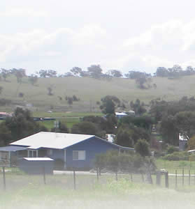
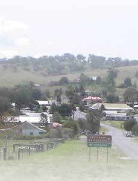
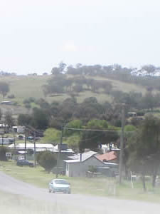
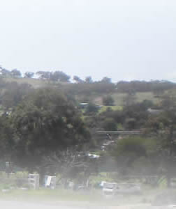

{kind=link}
{kind=link}
{kind=link}
{kind=link}
{kind=link}
{kind=link}
{kind=link}
{kind=link}
{kind=link}
{kind=link}
{kind=link}
{kind=link}
{kind=link}
{kind=link}
{kind=link}
{kind=link}




Site by Webthingys
..efficient, affordable web sites and the Highway West town sites.
Can't find what you're looking for?
Try the SEARCH box >>
Wellington NSW one of 18 regions in the HIGHWAY WEST family of Town sites.
Our Thanks....... please mention the Wellington-nsw.com website when you contact any business/organisations below.
STUART TOWN
Wellington, Central West NSW
Wellington Town & Around Web site
Discover... Wellington Caves | Osawano Japanese Gardens | Lake Burrendong State Park | Stuart Town | Cumnock | Geurie | Yeoval |
PHOTO GALLERY:
Click any image to view the larger image Gallery Slide Show.
Stuart Town, a small rural service centre in Central NSW, is an old Gold Mining town - 60kms north of Orange on Burrendong Way, 48 kms from Molong via Euchareena Road and Burrendong Way and 34kms south of Wellington on Burrendong Way.
Today, sheep, wool, cattle and orchards are the major enterprises - the area has a reputation for its perfect peaches.
In its gold mining days, beginning in the 1870s, Stuart Town and nearby Mookerawa were thriving communities of miners and gold seekers. An unconfirmed report states that at the peak of the mining, the population reached 6,000 persons with a mixed population of European and Chinese.
Most mining had ceased by 1914.
As with other gold mining towns in Central NSW, Ben Hall the bushranger left his mark when he and his gang robbed a wine shanty at Mookerawa.
Take a pleasant stroll across the railway line to Stuart Towns common, an area of approximately 1000 acres, where many of the old mines can be found (Along Wellington St and Mookerawa Rd). There are over fifty old mineshafts as well as a Chinese oven.
A little 'gold panning' in some of the creeks on the common can often reward you with a 'few colours'.
WARNING: - caution should be taken when approaching old mine shafts.
Gold Mining History:
Gold Panning - Fossicking:
The Man from Ironbark:
The countryside surrounding Stuart Town has many Ironbark trees (a particular type of Gum/Eucalypt Tree) and prior to 1889 the settlement was called 'Ironbarks'. A. B. ‘Banjo’ Paterson, one of Australia’s most famous, admired poets, wrote a now famous poem called 'The Man from Ironbark'. Ironbark referred to this town Ironbarks - since re-named Stuart Town. It was re-named after the premier of NSW Sir Alex Stuart - 1883 - 1885.
History around town:
There are a number of historic buildings of significance around Stuart Town. A few that you see on a Heritage Walk are - Boehme's Hall, Yee Lee Store, Old Railway Hotel - now the Post Office, Railway Gatekeepers Cottage & the local Stuart Town cemetery.
Boehme's Hall (1850 - recently restored by Stuart Town Preservation Society) was once a Dance Hall and Picture Theatre amongst other things.
The Old Railway Hotel has also been restored to its original state and is now the Stuart Town Post Office.
The Stuart Town Cemetery was once called Omigal Cemetery and has many grave-stones dating back to the early settlement days of Ironbarks.
The old Yee Lee stores - a very unique building located in Alexander Street.
Yee Lee was actually Wong War Lai (pronounced Wah Lay). War Lai were his Christian Names but when he came to Australia in 1888 and was asked his name - when he said Wong War Lai, it was noted as Yee Lee.
Yee Lee started a grocery, general store - Yee Lee General Store. (The original building was added to - firstly a residence was added to one end and then during the Depression years a further addition was done.
When you entered the old Yee Lee store everything was on display. There were hooks in the ceilings where billy cans etc were hung, on the left hand side was the grocery section and on the right was drapery, boots and shoes etc. At the rear produce was stored - chaff, oats, bran etc.
In 1902 Yee Lee visited China and married. On returning to Stuart Town they had two sons and a daughter.
Yee Lee died in 1936 and his wife just after the war ended. His sons and daughter continued to work the store until firstly the daughter married, then with the war, one son moved to work in Sydney (1942). After Yee Lee's wife died shortly after the war, the other brother sold the store and also moved to Sydney.
Pic. in gallery shows inset of Yee Lee Store 1940 - with the building on the left end the one still standing.
Trivia Information:
Chinese New Year:
Chinese belief is to worship the moon.... because the moon governs the tides and the tides govern the seasons and the seasons govern the crops that enables you to eat well - if you have a bad season you starve.
Then - if the seasons are good and you have anything left over you give your offering to the moon and you pray to the moon that you have good seasons.
You are not supposed to carry any money over to the next year - you are supposed to give to your younger people and then you start off afresh in the New year.
Sir Robert Askin:
NSW Premier, Sir Robert Askin, lived in Stuart Town and attended the Stuart Town Public School when he was 5 years of age (around 1906). A bridge on the Mookerawa Road was opened and named after Sir Robert Askin.
Mookerawa Waters Park:
- follow Wellington Street into Mookerawa Road to end.
Roughly 10 kms from Stuart Town there are excellent opportunities for water sports and activities. Set in natural bushland, Mookerawa Waters Park is located on the foreshores of Lake Burrendong and is part of the Lake Burrendong State Park - 15 kms to the south.
Mookerawa Waters Park is great for -
fishing | swimming | skiing | boating | relaxing enjoying the wonderful surrounds.
There are a variety of walks available for bushwalkers with plenty of wildlife visible - wallabies, kangaroos, goats as well as an abundance of birdlife.
Accessible at all times, however a token is required for exit from the park. Purchase tokens during office hours 9am to 5pm.
Mookerawa Waters State Park, Lake Burrendong
Stuart Town Via Wellington NSW 2820 Contact: Mookerawa Kiosk ph: 02 6846 8268
Stuart Town Community Website:
Stuart Town Events:
The Man From Ironbark Festival : An annual Stuart Town Event
The Man from Ironbark Festival - normally around April
A Fun, Family Day - includes Art Show, Parades, Easter Egg Hunt, Billy Boiling competitions, BBQs, Poetry in the Pub and a Bush Dance.
Euchareena, a small, quiet rural village 17 km from Stuart Town
Stuart Businesses: